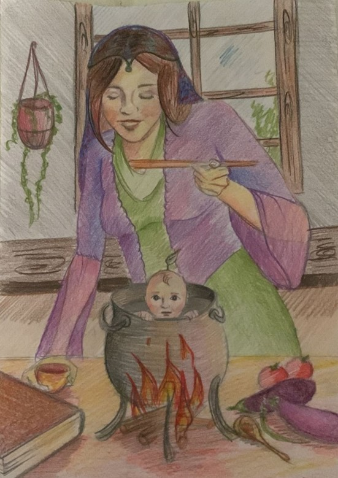

Merhaba. Ben Nohut Oğlan… Evet, bitki kökenliyim. Çocuk doğuramadığı için kocası tarafından sürekli aşağılayan bir kadının “Keşke bir çocuğumuz olsaydı da tarlada çalışan babasına azık götürseydi” diye dua etmesinden sonrasında ortaya çıktım. Kadın bir gün Allah’a dua ederken ocaktaki biz nohutların hepsi birden çocuk oluverdik. Kadının şaşkın bakışları altında evdeki bütün yiyecekleri silip süpürdük. Hepimizi süpürgeyle ocağa süpürdü fakat ben sıçrayıp bir rafa kondum. Börek yapan kadın “Ah bir çocuğumuz olsaydı da şu böreği tarladaki kocama götürseydi” diye iç geçirince hemen ortaya çıktım ve böreği babama götürmek için yol koyuldum. Tarlaya varırken babama selendim, o da şaşırdı. Börekleri yedim ve çıkının içine taş doldurdum. Babam yemek yemek için oturduğunda bir öküzün kulağının içine saklanıverdim. Babam yeniden çift sürmeye kalktığında öküzü yürütmedim, babam da öfkelenip öküzü kesiverdi. Babam öküzün kafasını bir kadına verdi. Kadın yolda giderken bostan tarlasına girip kavun karpuz koparmak istedi, dile gelip başkasının malına el uzatmamasını söyledim. Sesin nereden geldiğini anlayamayan kadın korkup evine gitti. Akşam öküzün kulağından çıkıp horozla köpeği dış kapının yanına bağladım. Gürültü yapıp kadını korkuttum. Uyanan kadın köylüleri çağırdı, onlar da gelip beni yakaladılar. Uslanmam için beni köy odasına kapattılar. Uslanınca da anneme ve babama teslim ettiler. O günden sonra annemle babamın sözünden hiç çıkmadım. Birlikte mutlu ve huzurlu bir hayat sürdürdük. (Nohut Oğlan masalı için bk. Boratav, 2017: 272-278.)
